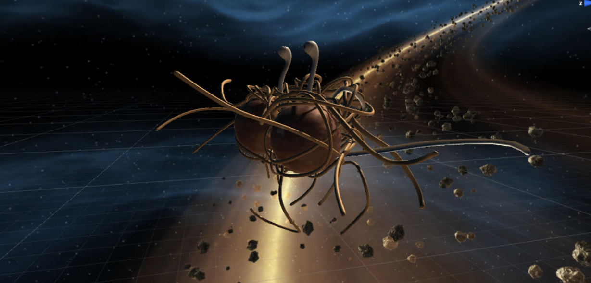

Beansjam

Dieses Spiel entstand während meiner ersten Teilnahme an einem GameJam und war auch eines meiner ersten Projekte mit der Unity Engine. Dementsprechend simple wurde das Spiel auch. Das Thema des Jams war Space & Mafia. Das Ziel des Spieles ist mit dem im Screenshot zu sehenden Space-Auto die Meatball-Meteoriten abzuschießen und die darin enthaltenen Pizzastücke einzusammeln ohne vom Weltraummonster Spaghetto erwischt zu werden. Da ich damals noch keine Versionskontrolle verwendet habe, gibt es hierfür leider keinen Source Code.
